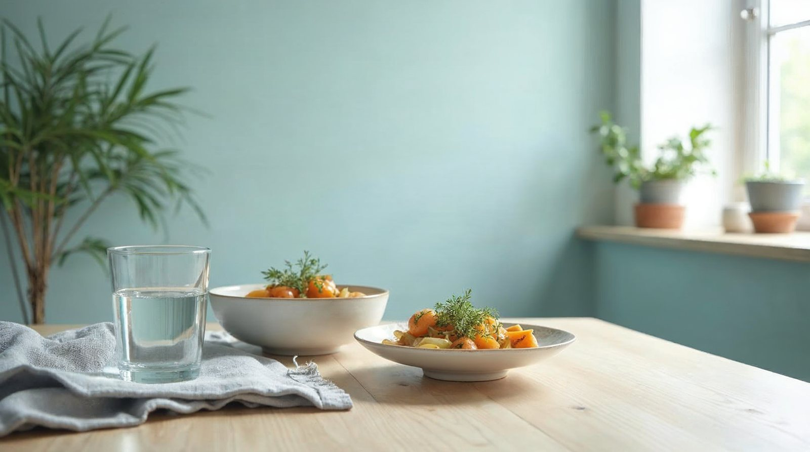
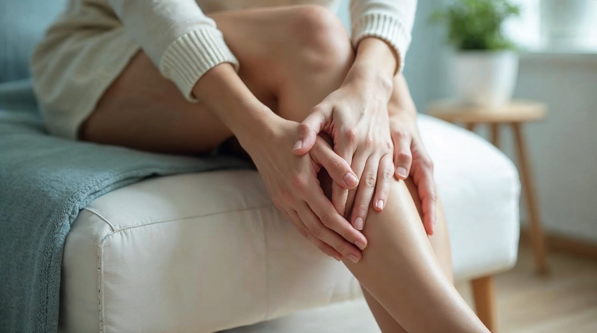
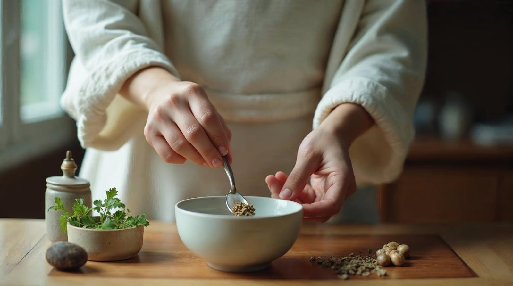
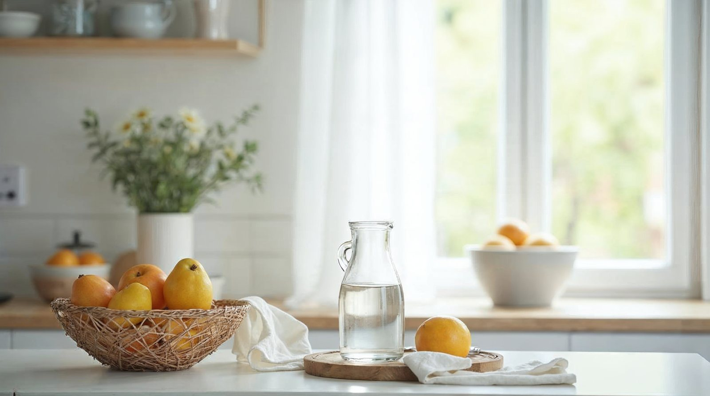

이종호 한의사 감수좋은꿈참사랑한의원 대표원장 (한의사 면허번호 19769)발행 2026-11-22 · 수정 2026-11-26
이 글의 차례
- 눌렀을 때 자국이 남는 붓기는 무엇을 뜻하나요
- 붓는 자리와 시간으로 나눠 봅니다
- 왜 이런 불편이 생길 수 있나요
- 왜 오후가 될수록 다리가 더 부을까요
- 붓기와 살찜은 어떻게 다를까요
- 먼저 이렇게 여쭙니다
- 일상에서 먼저 해 볼 수 있는 것
- 종아리 근육을 쓰는 동작
- 옷과 신발, 앉는 자세도 살펴보세요
- 계절과 날씨에 따라 달라지기도 합니다
- 물을 적게 마시면 덜 부을까요
- 드시는 약도 함께 살펴봅니다
- 상황별 예시
- 스스로 점검해 보세요
- 한의원에서 함께 살필 수 있는 경우
- 한의학에서는 붓기를 어떻게 바라보나요
- 이렇게 기록해 오시면 상담이 쉬워집니다
- 얼마나 지켜보고 언제 상담할까요
- 이런 증상은 먼저 확인이 필요합니다
- 관련 글
저녁에 양쪽 다리가 비슷하게 붓고 아침이면 빠지는 붓기는 생활 습관과 관련 있는 경우가 많지만, 한쪽만 갑자기 붓는 경우는 지체 없이 병원에서 먼저 확인해야 합니다. 붓기는 하루 중 몸의 수분이 어디에 몰리는지에 따라 달라지고, 같은 붓기처럼 보여도 병원 확인이 먼저 필요한 부종이 있습니다.
"저녁만 되면 양말 자국이 깊게 남아요", "아침에 눈두덩이 퉁퉁 부어 있어요" 하는 이야기를 진료실에서 자주 듣습니다. 붓기는 그 자체가 하나의 병 이름이라기보다 몸 어딘가에서 수분이 제자리를 벗어나 머물고 있다는 신호입니다. 그래서 저는 어디가, 언제, 어떻게 붓는지를 먼저 나눠 보고, 생활 속에서 바꿀 수 있는 붓기인지부터 함께 살핍니다.
눌렀을 때 자국이 남는 붓기는 무엇을 뜻하나요
정강이 앞이나 복사뼈 주변을 손가락으로 5초쯤 꾹 눌렀다 뗐을 때 움푹한 자국이 남았다가 천천히 차오른다면, 피부 아래 조직에 수분이 고여 있다는 뜻입니다. 오래 서 있은 저녁에 이런 자국이 살짝 남는 것은 흔한 일입니다.
같은 자리를 아침과 저녁에 한 번씩 눌러 보고 자국이 얼마나 깊은지, 몇 초 만에 차오르는지를 적어 두면 하루 사이의 변화를 알아보기 쉽습니다.
다만 아침에도 자국이 깊게 남거나, 누른 자리가 한참 동안 차오르지 않거나, 날이 갈수록 붓는 범위가 무릎 위로 올라온다면 생활 습관만으로 설명하기 어려울 수 있습니다. 이런 경우에는 내과에서 혈액·소변 검사로 심장, 콩팥, 간, 갑상선 쪽을 먼저 확인받아 보시길 권합니다.
붓는 자리와 시간으로 나눠 봅니다
- 저녁에 양쪽 발목과 종아리: 오래 서 있거나 앉아 있던 날, 짠 음식을 먹은 날 흔하고 밤새 누워 있으면 아침에 빠지는 경우가 많습니다.
- 아침에 얼굴과 눈두덩: 전날 늦게 먹은 짠 음식이나 술, 잠이 부족했던 날 흔하고 일어나 움직이면 몇 시간 안에 빠지기도 합니다.
- 아침에 손가락: 반지가 빡빡하고 주먹이 덜 쥐어지는 느낌이라면, 붓기와 함께 손가락 관절이 뻣뻣한지도 같이 봅니다.
- 생리 전 며칠: 손발과 배, 가슴까지 묵직하다가 생리가 시작되면 빠지는 모양이 반복되기도 합니다.
- 비행기나 버스로 오래 이동한 뒤: 발목이 부어 신발이 꽉 끼는 경우가 많고, 하루 이틀 걷고 쉬면 빠지는 경우가 많습니다.
왜 이런 불편이 생길 수 있나요
- 오래 서 있거나 앉아 있으면 다리 근육의 펌프 작용이 줄어 혈액과 수분이 아래쪽에 머물기 쉽습니다.
- 짠 음식을 먹은 날에는 몸이 수분을 더 붙잡아 손과 얼굴, 발이 부을 수 있습니다.
- 생리 전처럼 호르몬이 변하는 시기나 더운 날씨에도 붓기가 잘 생깁니다.
- 일부 약이나 심장·콩팥·간 질환, 갑상선 문제처럼 확인이 필요한 원인도 있어 모양을 나눠 보는 것이 중요합니다.
왜 오후가 될수록 다리가 더 부을까요
우리 몸의 혈액과 수분은 중력 때문에 서 있거나 앉아 있는 동안 조금씩 아래로 모입니다. 다리 혈관에는 피가 거꾸로 내려가지 않게 막는 판막이 있고 종아리 근육이 펌프처럼 밀어 올려 주지만, 오래 같은 자세로 있으면 이 펌프가 덜 움직여 발목과 종아리에 수분이 머물기 쉽습니다.
그래서 아침에는 가볍던 다리가 오후로 갈수록 무거워지고, 밤에 누워 자는 동안 다시 빠지는 흐름이 생깁니다. 다리에 푸르게 비치는 혈관이 구불구불 튀어나와 보인다면 혈관 쪽 상태도 함께 살펴볼 필요가 있습니다.
붓기와 살찜은 어떻게 다를까요
붓기는 하루 안에서도 아침과 저녁의 차이가 크고, 체중이 하루 사이 1kg 넘게 오르내리기도 합니다. 반면 살이 찌는 것은 몇 주에서 몇 달에 걸쳐 천천히 늘고, 아침저녁의 차이가 크지 않습니다.
그래서 붓기가 걱정된다면 아침에 일어나 화장실을 다녀온 뒤와 저녁 잠들기 전, 하루 두 번 체중을 며칠 재어 보시길 권합니다. 저녁마다 늘었다가 아침에 돌아온다면 붓기 쪽에, 아침 체중 자체가 몇 주에 걸쳐 오른다면 몸의 구성 변화 쪽에 가깝다고 볼 수 있습니다.
이렇게 적어 보면 "요즘 살이 쪘다"고 느끼던 것이 사실은 저녁 붓기였다는 것을 알게 되는 분도 있고, 반대로 붓기라고 생각했던 것이 몇 달 사이 늘어난 체중이었던 분도 있습니다.

먼저 이렇게 여쭙니다
- 붓는 곳은 얼굴, 손, 다리 중 어디인가요?
- 아침에 심한가요, 저녁에 심한가요?
- 한쪽만 붓나요, 양쪽이 비슷한가요?
- 눌렀을 때 자국이 남나요?
- 붓기가 생리 주기나 계절에 따라 달라지나요?

일상에서 먼저 해 볼 수 있는 것
- 오래 서 있거나 앉아 있지 않고 중간에 걷기
- 저녁에 쉬거나 누울 때 15분쯤 다리를 심장보다 조금 높게 올려 두기
- 짠 음식 줄이고 물은 조금씩 나누어 마시기
- 꽉 끼는 양말이나 신발은 피하기
- 앉아서 일할 때 발목을 위아래로 까딱이는 운동을 한 시간에 20번쯤 하기
- 늦은 밤 짠 음식과 술은 줄이고, 저녁은 잠들기 3시간 전에 마치기
- 잠은 하루 7시간 안팎으로 일정하게 자기
- 샤워 뒤 발끝에서 무릎 쪽으로 종아리를 가볍게 쓸어 올리기
종아리 근육을 쓰는 동작
종아리 근육은 걸을 때마다 수축하며 다리 아래쪽에 머문 혈액과 수분을 위로 밀어 올립니다. 그래서 종아리를 자주 움직이는 것만으로도 저녁 붓기가 덜하다는 분이 많습니다.
동작은 한 번에 오래 하기보다 하루에 여러 번 나눠 하는 것이 좋습니다. 텔레비전을 볼 때, 양치할 때처럼 이미 하고 있는 일에 붙여 두면 잊지 않고 이어 가기 쉽고, 저녁 붓기가 어떻게 달라지는지도 며칠 지켜보며 적어 볼 수 있습니다.
- 까치발 들기: 벽이나 의자를 짚고 뒤꿈치를 천천히 들었다 내리기, 15회씩 하루 두세 번
- 발목 펌프: 앉거나 누워서 발끝을 몸 쪽으로 당겼다 멀리 밀기를 20회
- 발목 돌리기: 발목을 한 방향으로 10번, 반대 방향으로 10번 천천히 돌리기
- 다리 올리고 쉬기: 저녁에 누워 쿠션으로 다리를 받쳐 심장보다 조금 높게 두고 15분쯤 쉬기
- 점심 뒤 걷기: 10분이라도 걸으며 종아리를 쓰는 시간을 하루 일과에 넣기
옷과 신발, 앉는 자세도 살펴보세요
- 허리나 무릎 아래를 꽉 조이는 옷, 고무줄 자국이 깊게 남는 양말은 다리 아래쪽 흐름을 방해할 수 있습니다.
- 다리를 꼬고 오래 앉으면 무릎 뒤가 눌려 아래쪽에 수분이 머물기 쉬워, 양발을 바닥에 두고 앉는 쪽을 권합니다.
- 의자가 높아 발이 바닥에 닿지 않으면 허벅지 뒤가 눌리기 쉬워, 발받침을 두면 한결 편합니다.
- 굽이 높거나 앞이 좁은 신발은 걸을 때 종아리를 덜 쓰게 해, 오래 걷는 날은 편한 신발로 바꿔 신어 봅니다.
계절과 날씨에 따라 달라지기도 합니다
더운 여름에는 혈관이 넓어지며 다리와 손이 붓기 쉽고, 땀을 많이 흘린 뒤 짠 음식을 찾다 보면 붓기가 더해지기도 합니다. 반대로 추운 겨울에는 움직임이 줄고 실내에 오래 앉아 있게 되어 다리가 무거워지는 분이 많습니다.
계절이 바뀔 때마다 붓기가 달라진다면 그 시기의 생활 변화를 함께 떠올려 보세요. 더운 날에는 시원한 곳에서 다리를 올려 쉬고, 추운 날에는 실내에서라도 자주 일어나 걷는 것이 도움이 됩니다.
물을 적게 마시면 덜 부을까요
붓는 게 싫어 물을 일부러 줄이는 분이 있는데, 물이 부족하면 몸이 오히려 수분을 붙잡으려 하고 변비나 피로가 함께 오기 쉽습니다. 특별히 물을 줄이라는 말을 듣지 않았다면, 한꺼번에 많이 마시기보다 하루 동안 조금씩 나눠 마시는 쪽을 권합니다.
붓기에 더 큰 영향을 주는 것은 소금입니다. 국물과 젓갈, 가공식품, 배달 음식이 겹친 날 다음 아침에 얼굴이 붓는다면, 국물은 건더기 위주로 먹고 짠 반찬은 한두 가지로 줄여 보세요. 심장이나 콩팥 질환으로 물 양을 정해 둔 분은 담당 의사의 안내를 먼저 따르셔야 합니다.
드시는 약도 함께 살펴봅니다
혈압약 가운데 일부, 진통소염제, 호르몬제처럼 붓기와 관련이 있을 수 있는 약이 있습니다. 약을 시작하거나 바꾼 뒤 붓기가 생겼다면 그 시기를 적어 처방한 의사와 먼저 상의해 주세요.
붓는다고 해서 드시던 약을 임의로 끊거나 줄이지는 마세요. 약을 바꿀지는 처방한 곳에서 정하고, 한의원에서는 복용 중인 약을 확인한 뒤 생활 관리와 진료 방법을 함께 정합니다.
상황별 예시
- 예를 들어 하루 종일 매장에서 서서 일하는 직장인이라면, 퇴근 무렵 양쪽 발목이 붓고 신발이 꽉 낄 수 있습니다. 쉬는 시간마다 까치발 들기를 하고, 퇴근 뒤 다리를 올리고 15분 쉬어 봅니다.
- 예를 들어 늦은 밤 라면이나 배달 음식을 먹고 잔 다음 날 아침 눈두덩이 붓는다면, 저녁을 조금 일찍 먹고 국물을 남기는 것부터 해 봅니다.
- 예를 들어 생리 전마다 손발이 붓고 몸이 무겁다면, 몇 달 동안 주기와 붓기를 함께 적어 두면 붓기가 언제 시작해 언제 빠지는지가 보입니다.
- 예를 들어 하루 종일 책상 앞에 앉아 공부하는 수험생이라면, 저녁이면 발목이 붓고 종아리가 묵직할 수 있습니다. 한 시간에 한 번 일어나 물을 뜨러 다녀오고, 앉아 있는 동안 발목 펌프를 틈틈이 해 봅니다.
- 예를 들어 장거리 비행이나 버스 이동이 잡혀 있다면, 통로 쪽 자리를 골라 한두 시간마다 일어나 걷고, 앉아 있는 동안에는 발목을 자주 움직여 봅니다.
스스로 점검해 보세요
- 저녁이면 양말 자국이 깊게 남고 아침이면 빠진다
- 짠 음식을 먹은 다음 날 얼굴이나 손이 더 붓는다
- 하루에 서 있거나 앉아 있는 시간이 8시간을 넘는다
- 생리 전에 붓기가 심해졌다가 생리가 시작되면 빠진다
- 아침과 저녁 체중이 1kg 넘게 차이 난다
- 붓기가 몇 주에 걸쳐 점점 넓어지거나 아침에도 빠지지 않는다
앞의 다섯 가지는 생활을 바꾸며 지켜볼 만한 모습이고, 마지막 항목에 해당한다면 내과 확인을 먼저 받아 보세요.

한의원에서 함께 살필 수 있는 경우
- 저녁에 다리나 손이 붓는 경우 순환과 생활 습관을 함께 살핍니다.
- 오래 앉거나 서 있으면 부종이 심해지는 경우 몸의 흐름을 함께 살핍니다.
- 짠 음식을 먹은 날 붓기가 심한 경우 식사와 수분을 함께 살핍니다.
- 손발이 차고 저녁마다 붓는 경우 순환과 잠, 식사를 함께 살핍니다.
좋은꿈참사랑한의원에서는 먼저 불편이 나타나는 때와 모양을 충분히 듣고, 진맥을 기본으로 하고 필요하다고 판단될 때 설진을 더해 살핀 뒤 침이나 한약 상담 등 맞는 방법을 정합니다. 다른 의료기관 확인이 먼저 필요하면 그 순서를 안내합니다.
한의학에서는 붓기를 어떻게 바라보나요
한의학에서는 몸이 무겁고 잘 붓는 상태를 몸 안의 수분이 고르게 돌지 못하고 한곳에 머무는 흐름으로 설명하기도 합니다. 그래서 붓는 자리만 보지 않고 소화가 잘 되는지, 대소변은 어떤지, 손발이 찬지, 잠은 깊은지를 함께 여쭙습니다.
예를 들어 식사 뒤 더부룩함이 잦고 아침에 몸이 무거운 분과, 하루 종일 서서 일해 저녁에만 다리가 붓는 분은 같은 붓기라도 살피는 방향이 다릅니다. 이렇게 몸 전체의 리듬을 듣고 진맥한 뒤 생활에서 바꿀 것과 진료 방법을 함께 정합니다.

이렇게 기록해 오시면 상담이 쉬워집니다
- 붓는 부위와 시각, 눌렀을 때 자국이 남는지
- 붓는 부위를 같은 각도로 찍은 아침·저녁 사진
- 아침과 저녁 체중(가능하면 며칠 연속)
- 그날 먹은 짠 음식과 물 마신 양
- 복용 중인 약(혈압약, 진통제, 호르몬제 등)
- 생리 주기와 붓기가 겹치는지(여성의 경우)
- 하루 서 있거나 앉아 있던 시간, 걸음 수
- 최근 받은 혈액·소변 검사 결과가 있다면 그 결과지
얼마나 지켜보고 언제 상담할까요
- 짠 음식 줄이기, 종아리 동작, 다리 올리기를 2~3주 이어 가며 아침·저녁 체중과 붓기를 기록합니다.
- 생활을 바꿔도 붓기가 그대로이거나 몸이 무겁고 쉽게 지치는 날이 늘면 상담을 받아 보세요.
- 약을 시작하거나 바꾼 뒤 붓기가 생겼다면 처방한 의사와 먼저 상의합니다.
- 내과 검사에서 큰 이상이 없다고 들었는데 붓기와 무거움이 이어진다면, 그 결과지를 가지고 오시면 이어서 함께 살핍니다.
이런 증상은 먼저 확인이 필요합니다
- 한쪽 다리만 갑자기 붓고 아프거나 붉어지고 열감이 있는 경우(혈관 속에 피가 굳은 혈전일 수 있습니다)
- 붓기와 함께 숨이 차거나 가슴이 답답한 경우, 누우면 숨이 차서 베개를 높여야 잠들 수 있는 경우
이런 신호가 있으면 한의원보다 가까운 병원이나 응급실을 먼저 찾으세요.
관련 글
- 저녁마다 다리가 붓고 양말 자국이 깊게 남을 때, 부종은 무엇을 나눠 살피나요?
- 아침마다 눈두덩과 얼굴이 퉁퉁 붓는 얼굴 부종은 무엇을 나눠 살피나요?
- 오래 앉아 공부하면 다리가 붓고 저릴 때는 무엇을 살피나요?

여쭙는 것
- 붓는 곳은 얼굴, 손, 다리 중 어디인가요?
- 아침에 심한가요, 저녁에 심한가요?
- 한쪽만 붓나요, 양쪽이 비슷한가요?
생활에서 해 볼 것
- 오래 서 있거나 앉아 있지 않고 중간에 걷기
- 저녁에 쉬거나 누울 때 15분쯤 다리를 심장보다 조금 높게 올려 두기
- 짠 음식 줄이고 물은 조금씩 나누어 마시기
한의원에서 함께 살필 것
- 저녁에 다리나 손이 붓는 경우 순환과 생활 습관을 함께 살핍니다.
- 오래 앉거나 서 있으면 부종이 심해지는 경우 몸의 흐름을 함께 살핍니다.
- 짠 음식을 먹은 날 붓기가 심한 경우 식사와 수분을 함께 살핍니다.
먼저 확인이 필요한 신호
- 한쪽 다리만 갑자기 붓고 아프거나 붉어지고 열감이 있는 경우(혈관 속에 피가 굳은…
- 붓기와 함께 숨이 차거나 가슴이 답답한 경우, 누우면 숨이 차서 베개를 높여야 잠들…
한눈에 보는 표
| 구분 | 핵심 |
|---|---|
| 여쭙는 것 | 붓는 곳은 얼굴, 손, 다리 중 어디인가요? 아침에 심한가요, 저녁에 심한가요? |
| 생활에서 해 볼 것 | 오래 서 있거나 앉아 있지 않고 중간에 걷기 저녁에 쉬거나 누울 때 15분쯤 다리를 심장보다 조금 높게 올려 두기 |
| 한의원에서 함께 살필 것 | 저녁에 다리나 손이 붓는 경우 순환과 생활 습관을 함께 살핍니다. 오래 앉거나 서 있으면 부종이 심해지는 경우 몸의 흐름을 함께 살핍니다. |
| 먼저 확인이 필요한 신호 | 한쪽 다리만 갑자기 붓고 아프거나 붉어지고 열감이 있는 경우(혈관 속에 피가 굳은 혈전일 수 있습니다) 붓기와 함께 숨이 차거나 가슴이 답답한 경우, 누우면 숨이 차서 베개를 높여야 잠들 수 있는 경우 |
자주 묻는 질문
부기를 빼는 방법이 있나요?
생활 습관을 조절하는 방법을 안내하며 이유가 불분명하면 먼저 확인을 권합니다.
소변을 늘린다는 음료를 마셔도 되나요?
질환이나 복용 약에 영향을 줄 수 있어 먼저 상담하도록 안내합니다.
한의원에서는 무엇을 보나요?
붓는 시간과 부위, 식사와 수면을 묻고 몸 전체를 살핍니다.
압박 스타킹을 신어도 되나요?
오래 서 있는 날 도움이 되는 경우가 있지만, 한쪽만 붓거나 통증·열감이 있을 때, 당뇨가 있거나 발이 차고 걸을 때 종아리가 아픈 분은 신기 전에 병원 확인을 먼저 권합니다.
좋은꿈참사랑한의원은 재진 때 지난번 이야기부터 이어서 여쭙니다. 진료시간과 예약은 오시는 길에서 확인하세요.
어디서 상담받을 수 있나요?
좋은꿈참사랑한의원은 서울 동작구 만양로2길 2 신성빌딩 3층·5층(서울 동작구 상도동, 7호선 상도역 3번 출구 근처)에 있습니다. 한의사 3명(이종호 대표원장, 조영기 수석진료원장, 정원영 진료원장)이 진료합니다. 진료시간은 평일 09:30~20:00(점심 13:00~14:00), 토·일·공휴일 09:30~15:00이며, 방문 전 전화로 확인을 권합니다. 예약은 네이버 예약, 카카오톡 상담, 전화 02-815-7510로 받습니다.
이 글은 일반적인 건강 정보이며 개인의 진단이나 치료를 대신하지 않습니다. 증상이 있거나 복용 중인 약이 있다면 진료를 통해 확인하세요. 치료 효과는 개인마다 다를 수 있습니다.
작성 기준: 일반적으로 알려져 있는 건강 정보를 참고해 정리했습니다(대표원장 감수). 증상 기록은 1~2주 동안 하루 1회, 비슷한 시간에 적어 오시면 지난 상태와 비교하기 쉽습니다.